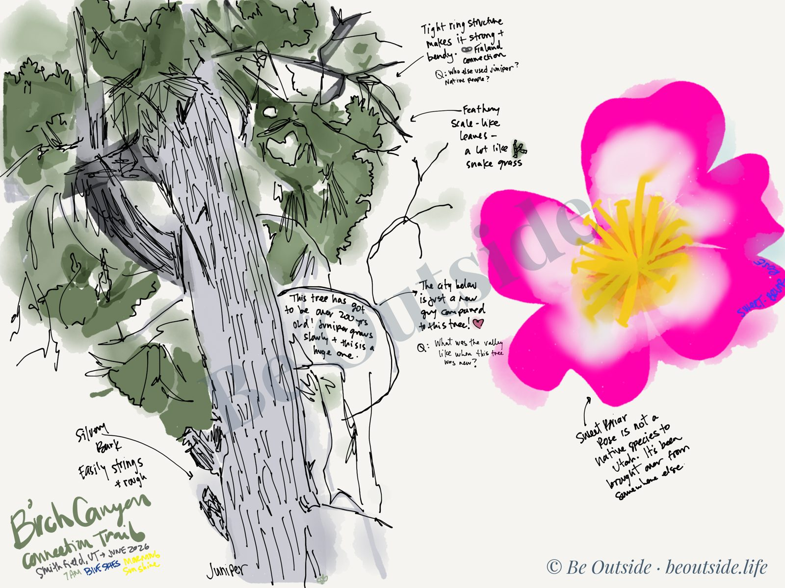

Keep Exploring
More trails are on the way.
Mt. Naomi and the San Juan River are next. Want a heads-up when they're ready, or an experience built around your own place?
Walk the trail to Birch Creek in Smithfield, Utah, from anywhere. A short film, four lessons in noticing, wondering, and making connections, two leveled readings, and everything you need to send kids outside to create. Free for teachers and parents.
The trails we walk in Cache Valley are the homeland of the Northwestern Band of the Shoshone Nation, who are still here today. We remember that this land was taken from them through violence. As we walk, we honor their history and care for this land.
Watch the film once, just to take it in. Then watch again with a foldable in hand, pausing on anything that deserves a closer look. Willows, a 200-year-old juniper, a rose that smells like apples, and a creek at the end of the trail.
Quick breathwork to check in before you begin.
Watch the film once, just to take it in.
Watch again and fill out the foldable.
Journal how you feel and what you learned.
Make art, photos, or film wherever you are.
Show your project to peers, a teacher, and a parent.
Each lesson opens with a short breathing practice, revisits the film, and builds one nature journaling skill. Teach them on four days, or fold them into a single afternoon.
Students learn to look closely, look from new angles, and take their time with nature.
I Notice foldable: notice, draw, and label 2 different plants or trees.
Students turn what they noticed into questions, then use a leveled reading to find answers.
I Wonder foldable: write 5 questions, then answer what you can from the reading.
Students connect what they saw on the trail to places, people, and memories in their own lives.
It Reminds Me Of foldable: write or draw 3 connections to your own life.
Students reflect in a nature journal, then head outside to make something of their own.
Final project: 3 labeled details, 3 questions, and 1 connection.
Every lesson plan follows the same simple structure: learning outcomes, a Breathe & Arrive practice, content presentation, learner participation, assessment, and follow-up activities.
Who grows on this trail, and how did it get there? Two double-sided readings help students sort the trail's native plants from the newcomers people brought from far away, and answer the questions they raised in Lesson 2.
Short, clear sentences about willows, chokecherries, a 200-year-old juniper, and a rose that smells like apples. Includes Trail Facts and Words to Know.
A deeper look at native and introduced plants, Shoshone uses of willow and chokecherry, and how one escaped orchard tree spread across Utah's valleys. Ends with a Read the Land question.
Willow · Chokecherry · Utah juniper · Milkweed · Big sagebrush · Maple · Aspen · Narrowleaf cottonwood
Sweet-briar rose · St. Lucie cherry · Smooth brome
Stu's own entry from the Birch Canyon Connection Trail, June 2026. Show it to students after they've started their own, so they can see each part in action.

Download the whole guide, or just the pieces you need for today.
All four lessons, the foldables, both Field Reads, the Nature Journal page, an example entry, and a bonus poem for two voices. PDF.
I Notice, I Wonder, It Reminds Me Of, and Be Outside!
Download PDF →I Notice, I Wonder, and It Reminds Me Of. One page each.
Download PDF →For the Lesson 4 reflection and outdoor project.
Download PDF →Old Neighbors and Newcomers. Print double-sided.
Download PDF →Old Neighbors and Newcomers. Print double-sided.
Download PDF →Stream it above. Works on any classroom screen.
Watch →Teaching and parenting are hard. Be Outside wants to help, with lessons built to calm and regulate kids and give you a minute to slow down too. And don't let a lesson be your only trail. Find a hike near you and get lost in nature for an afternoon. Everything will still be waiting for you when you get back.
— Stu Baggaley, Be Outside
Mt. Naomi and the San Juan River are next. Want a heads-up when they're ready, or an experience built around your own place?